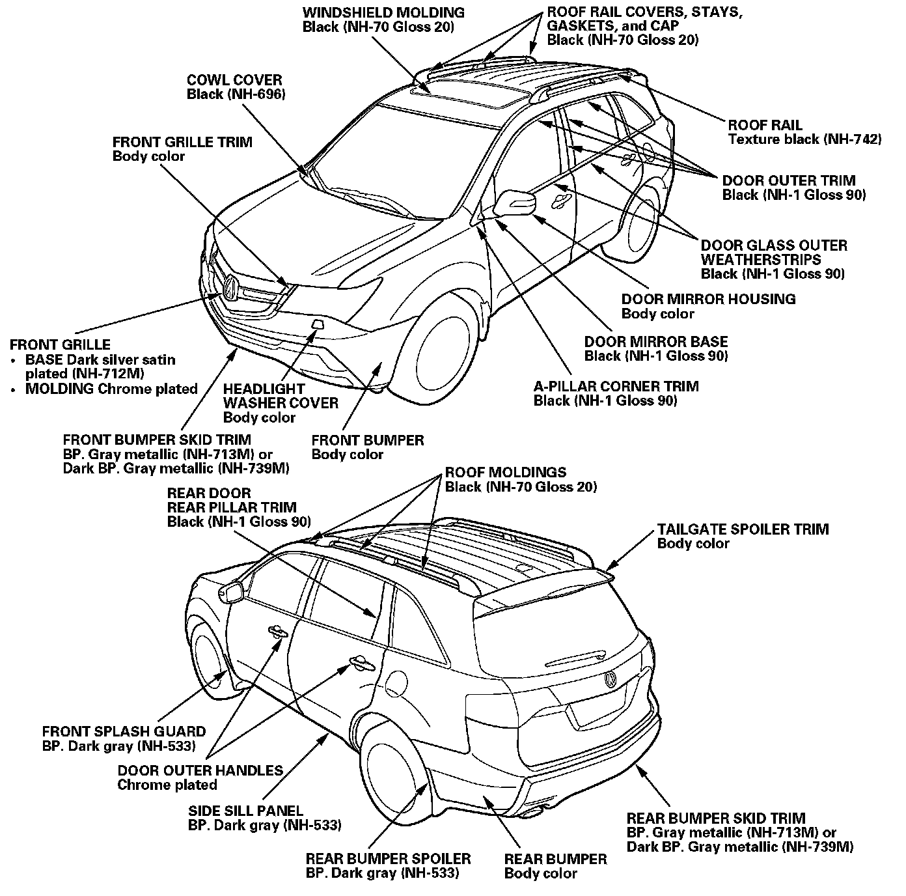

Color Chart Paint Specifications
Paint InformationColor Chart Paint Specifications
NOTE:
- For model year paint code information, refer to the appropriate table.
- Apply black paint to the visible surface of the front bulkhead, front bumper beam, vehicle support points, and front and rear wheelhouse after repairing and painting (except vehicles painted with black or dark colors).
